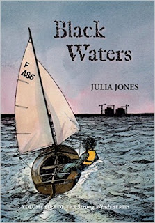
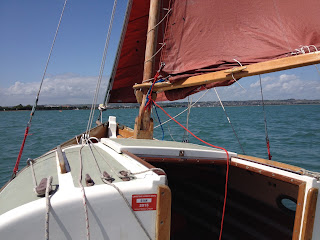
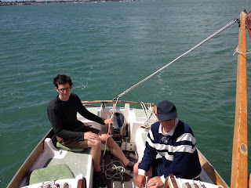

As we're all writers on this blog, it can't
be breaking protocol for me to do a preliminary review/puff for Julia Jones's
new book Black Waters. It's the fifth in her trilogy – or rather, it’s volume 5
in her Strong Winds series – and it takes her into ever-deeper waters. For me,
it raises the perennial question: what is a children's book?
But first, boringly, I'd better declare a
supposed interest. Julia has extremely close connections to Private Eye, and
neither of us would relish a knocking piece in that prominent and thrusting
organ. Julia is also a publisher, and her imprint Golden Duck publishes one of
my own books, Wild Wood.
 |
| A Firefly on a run - they're faster now! |
{kind=link}
Xanthe Ribiero is a black girl of sixteen.
She is well-to-do, of professional parents, and British. Many of her closest friends
are neither so blessed in their parents or their social position. But all of
them have come face-to-face and head-to-head with some of the problems faced by
young people in Britain today. The thing that binds them is the area they live
in, and the sea. They inhabit that part of the East Coast rising from north of
the Thames estuary up to about the River Deben. Xanthe is an Essex girl! Wow!
Significantly, as readers of the other books
will know, she is a brilliant, and competitive, sailor of small boats. Not the
sort of small boats that I delight in – slow, traditional, and certainly not
built for speed – but the modern dinghies that need brain, sinew and lightning
reactions. And that would probably drown an old get like me in five minutes
flat.
(For the inquisitive among you, my sailing
boats are a standing lug fifteen-footer and a pocket gaff sloop. Oh, and I have
a Mirror dinghy, which you obviously know is sliding gunter. Fast? You would
not believe it!)
Xanthe, as I said, is driven and superb.
Black Waters opens with a trial competition that could ultimately lead her to a
place in the Olympic team. She has a state of the art Laser Radial provided by
a willing sponsor, and the selectors are watching.
But she is up against all sorts of people
for a place in the Olympic team. And one of them, a beautiful young lady called
Madrigal, is as determined to win as Xanthe, and ruthless with it.
Now, I've only ever heard the term
'sledging' and had no real idea just what it meant until I read this book.
Madrigal is immensely rich; Xanthe is not. Xanthe’s boat is pretty damn hot;
Madrigal’s is to die for. Most useful of all, in the sledging game, is the fact
that Madrigal is white, and honey blonde, and slim. Xanthe is black; and not.
Try this for starters: 'you must feel the
cold terribly,' she added, turning to Xanthe. 'I expect you need thermal
undies even in our English summer!'
 |
| My sort of boat - two reefs down and still upright |
{kind=link}
Madrigal, by voice and action, manages a
superb job of unsettling, and Xanthe is well beaten in the race. But not enough
for Miss Superior.
'When I saw you struggling out there… I
couldn't help wondering whether you'd ever thought how much it would mean to
your own country if you elected to sail for them instead? Wherever it is in
Africa that you originally come from… I'm so completely hopeless at geography.
They probably haven't even got a sailing team! Rig a bathtub and you’d make it
unopposed. You'd be a national heroine. Your own tribe!'
What happens next is not pretty, and it
leads poor Xanthe into a sort of exile. She is kicked out of the team and ends
up trying to rehabilitate herself by helping some genuinely disadvantaged
children to learn how to sail and how to survive. But as in the earlier books, an
uncaring and malevolent outside world refuses to leave well alone.
The environment is also under threat as a
giant corporation bids to put this quiet, wildlife-rich semi-wilderness to
better (ie more profitable) use. Madrigal’s inhuman tactics redefined as an institution –
with genuine criminals dangerously involved.
 |
| Brother-in-law Eric, son Matti, boat Badsox |
{kind=link}
Although I've written many children's
books, I no longer read them regularly. This book is very dense, very rich, and
very complex – but is it for children? My rule of thumb was always that if I
could understand it, then so would a child – even if they had to work hard in
places. This story is about children, adults, culture, greed, great kindness
and great cruelty.
Like Arthur Ransome at his best, it is
adventure tinged with darkness. I think it's wonderful.
www.golden-duck.co.uk
Illustrated by Claudia Myatt
NOW A PS PUFF.
As on several times before, my ebook publisher Endeavour have sprung it on me. When I got back from sailing on the South Coast I discovered the first of my historical naval novels, A Fine Boy for Killing, was up on Kindle. The other three in the series will follow soonish.
I started writing these books as a sort of antidote to the genre that casts a young and charmingly beautiful midshipman in the Nelson mode, developed over several books. My hero, William Bentley is indeed young and handsome, but he seems destined to become a dangerous and unpleasant officer - a fine boy for killing, indeed. Hornblower with a taste for blood, as an earlier reviewer put it.
Another called it ‘Jack Aubrey with the gloves and rose-tinted spectacles torn off.’
For what it's worth, I think it's probably the best piece of sustained fiction I ever wrote. And, folks, it's now yours for £2.99! Eat your heart out, Harper Lee!
www.golden-duck.co.uk
Illustrated by Claudia Myatt
NOW A PS PUFF.
As on several times before, my ebook publisher Endeavour have sprung it on me. When I got back from sailing on the South Coast I discovered the first of my historical naval novels, A Fine Boy for Killing, was up on Kindle. The other three in the series will follow soonish.
I started writing these books as a sort of antidote to the genre that casts a young and charmingly beautiful midshipman in the Nelson mode, developed over several books. My hero, William Bentley is indeed young and handsome, but he seems destined to become a dangerous and unpleasant officer - a fine boy for killing, indeed. Hornblower with a taste for blood, as an earlier reviewer put it.
{kind=link}
Another called it ‘Jack Aubrey with the gloves and rose-tinted spectacles torn off.’
For what it's worth, I think it's probably the best piece of sustained fiction I ever wrote. And, folks, it's now yours for £2.99! Eat your heart out, Harper Lee!